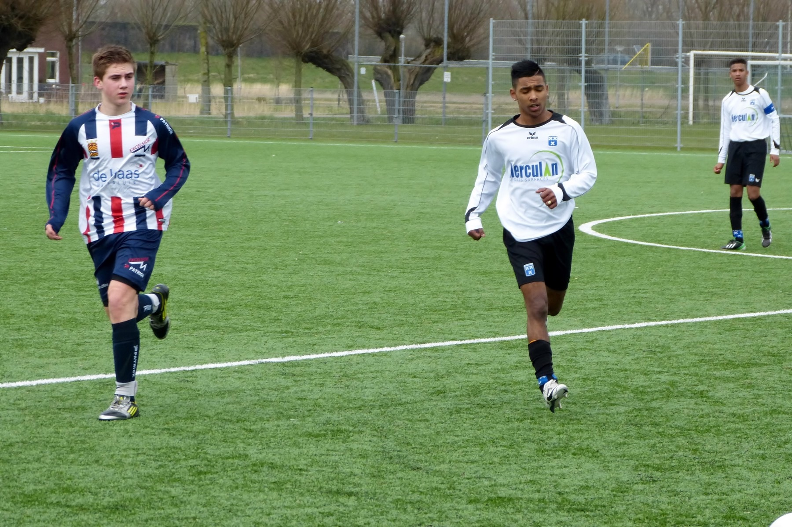

Mijn doelen zijn om een MBO-diplomate halen.Als ik er voor kies om HBO te doen wil ik gaan studeren voor data analist.Voor een opleiding data analist word verwacht een HBO of WO diploma te hebben.Daarna is er nog een keuze wat je moet maken, of je als data analist in de richting busniss of IT gaat volgen.Data analisten houden zich bezig met het verzamlen en controleren van gegevens om deze om te zetten tot informatie.Deze informatie word onderzocht en omgezet in kennis.Met deze kennis kan een bedrijf in een besluitvorming worden gebruikt om de juiste keuzes te maken en een strategie te bepalen.data analisten werken in bijvoorbeeld ICT-bedrijven,verzekeringsmaatschappijen, banken, woningbouworganisaties, overheidsinstellingen of in de levensmiddelenindustrie, aangezien alle ondernemingen en instellingen te maken hebben met een stroom gegevens die tot informatie verwerkt moet worden..Om een data analist te worden moet je een een afgeronde opleiding hebben op het gebied van wiskunde, economie of econometrie op een HBO of WO niveau.
Wat ik heel graag doe in mijn vrijetijd is tv kijken ik kijk veel naar TMNT (teenage mutant ninja turtles)en playstationen dat doe ik ook vaak meestal is dat call of duty of ik ben buiten met mijn vrienden aan het voetballen.Ik zit ook op voetbal, ik voetbalde eerst bij EBHO één jaartje, daarna was ik gestopt en ging k bij bij V.V.Wieldrecht voetballen.Ik zit er meer dan 7 jaar op en train 2 dagen in de week dat is op een maandagavond en een woensdagavond, wedstrijden speel ik op een zaterdag.Op de dagen waarop ik niet moet gaan trainen ga ik in de avond naar de sportschool.
